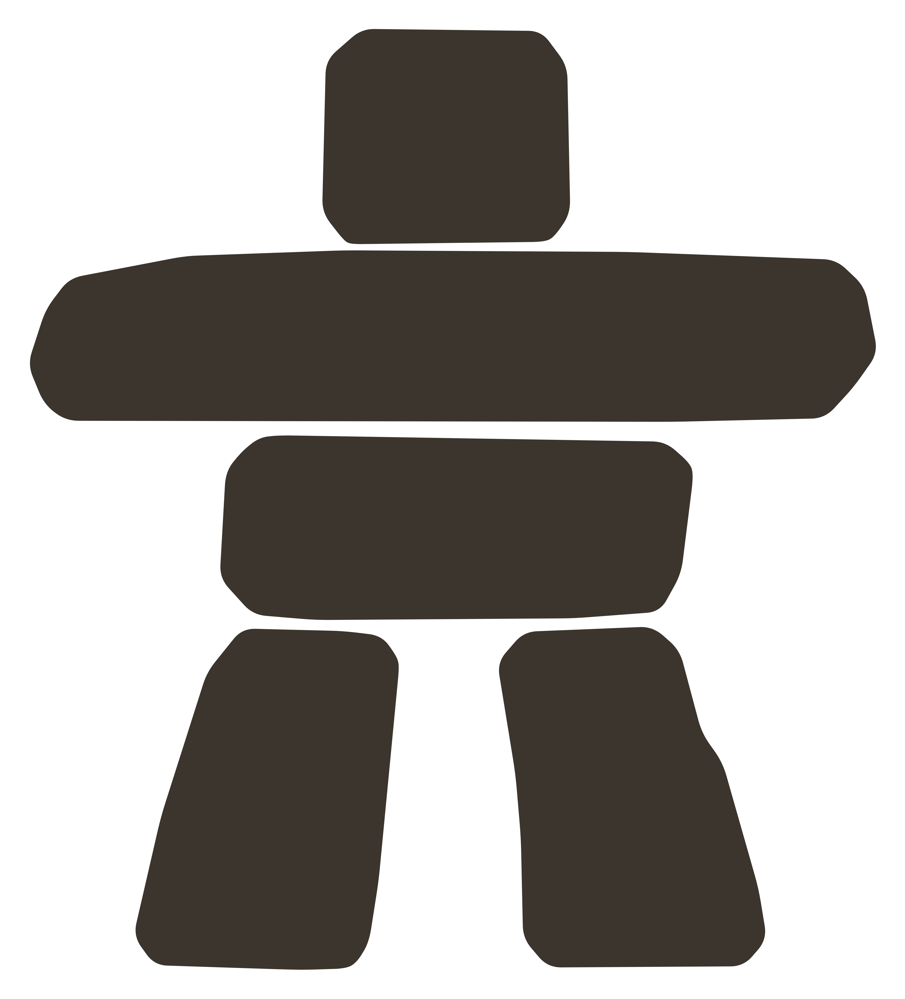
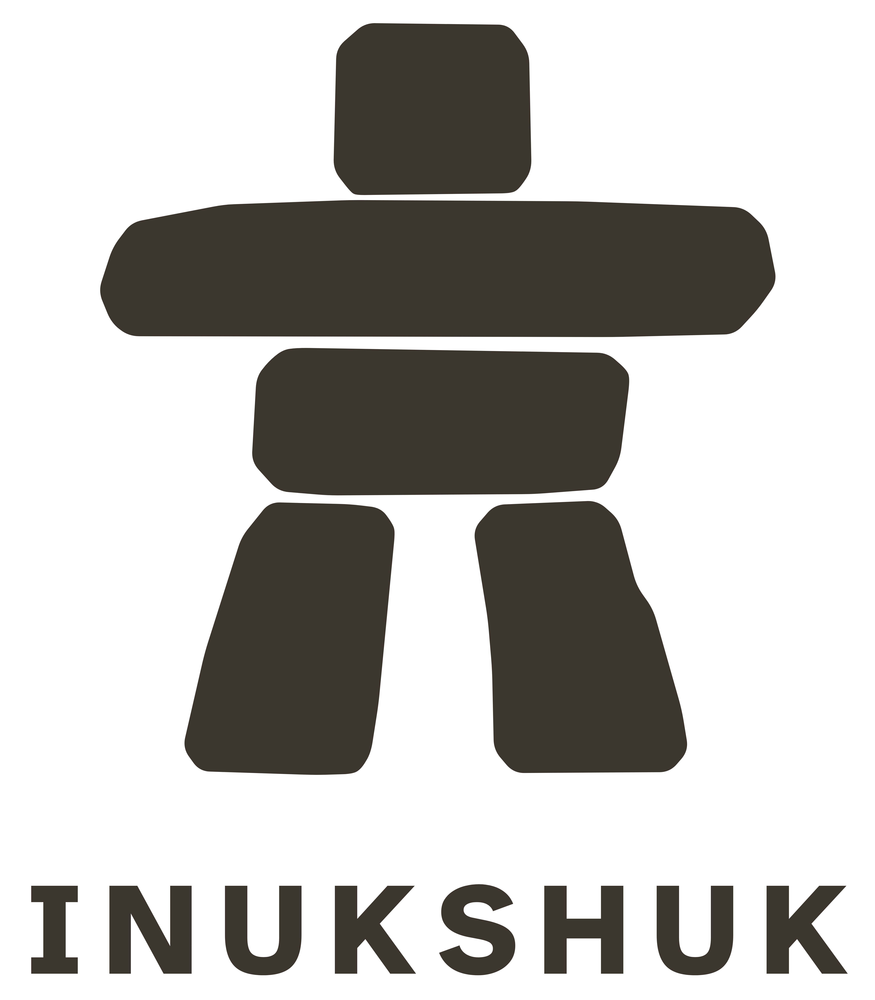

Inukshuk — logo monochrome, tons Stone & Paper
Brun-gris chaud #3B352E · crème #F1E8D4 · contours lissés (vectoriel, net à toute taille)

Brun · t-shirt crème
Brun · sable
Brun · sauge

Crème · t-shirt brun
Crème · charbon
Crème · forêt

Avec nom · crème
Avec nom · sable
Avec nom · sauge

Avec nom · brun
Avec nom · charbon
Avec nom · forêt
Zoom ×4 sur le bord des pierres : contours lisses, sans escalier.